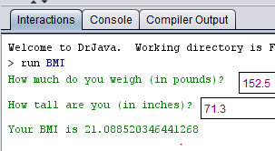
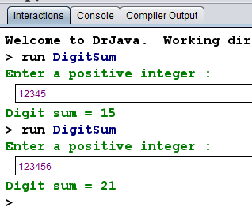
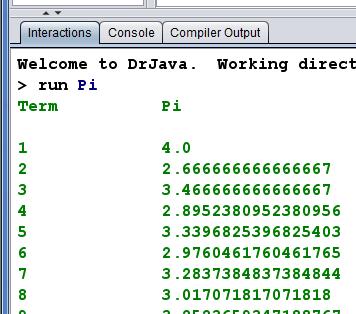

Write a Program, BMI, that calculates Body Mass Index (BMI). Body mass index (BMI) is a measure of body fat based on height and weight that applies to adult men and women. BMI can be used to indicate if you are overweight, obese, underweight, or normal. If your BMI is 30 or more, that might not be good. However, the simple BMI calculation tends to overestimate BMI in people who are muscular or athletic. Therefore, if your BMI score seems too high, you may not be overweight, just athletic. BMI is calculated based on a person's weight and height. The math formula for calculating BMI is:
weight(lb) * 703 / height(in)2
The file BMI.java is included as a starting point for you.
Example input/output:
Write another Program, DigitSum, that accepts an integer value from the user and prints the sum of its digits. You may assume that the number is non-negative. For example, if the user input the number 29107, then your program should print 19, which is 2+9+1+0+7. Hint: use the % (modulo) operator to extract a digit from a number.
Example input/output:
Write a final Program, Pi, that calculates the value of pi from the infinite series:
π=4/1-4/3+4/5-4/7+4/9-4/11+…
Note that for each term, the +/- sign alternates. Print a
table that shows the value of pi approximated by computing a given number
of terms. How many terms of this series do you have to compute before you
first get 3.14? 3.141? 3.1415? 3.14159? The program that you turn
in MUST compute just the first 100 terms
Example output:

Copy the folder LastName_FirstName_Asg1 containing
BMI.java, DigitSum.java, and
Pi.java into, /usr/people/handins/CS160 before
the due date.